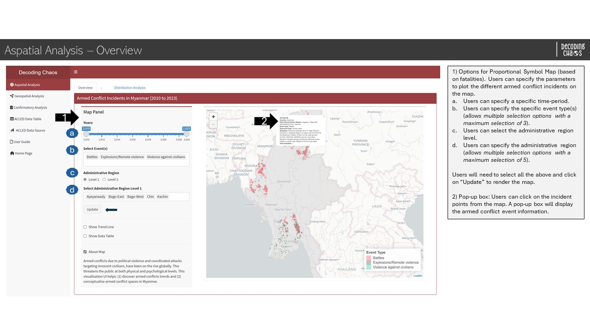
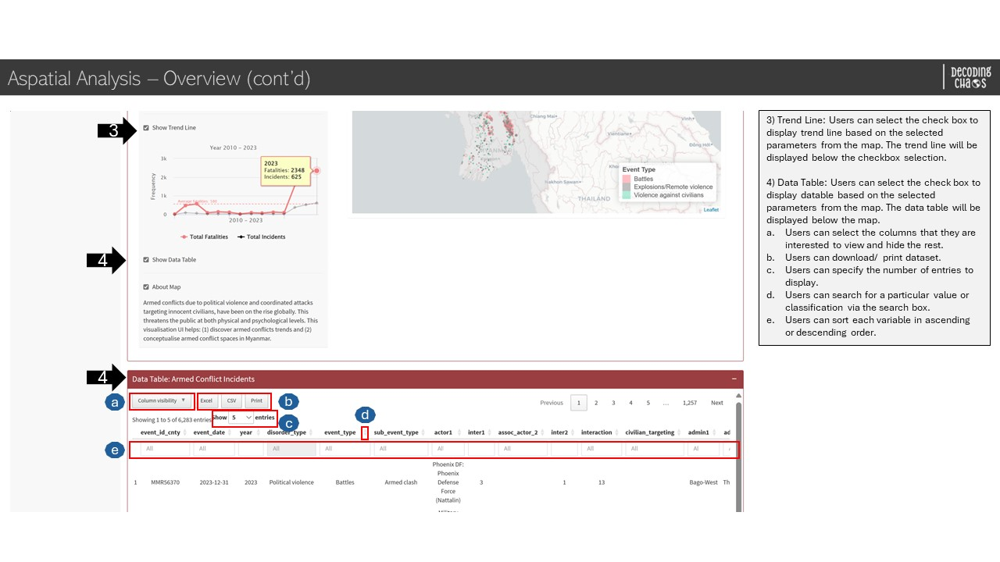
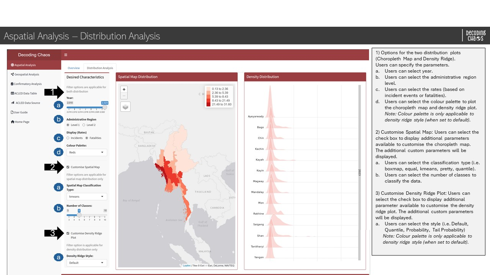
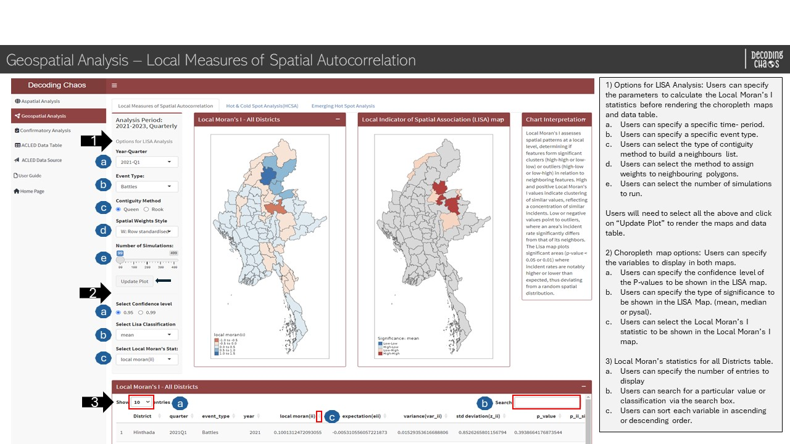
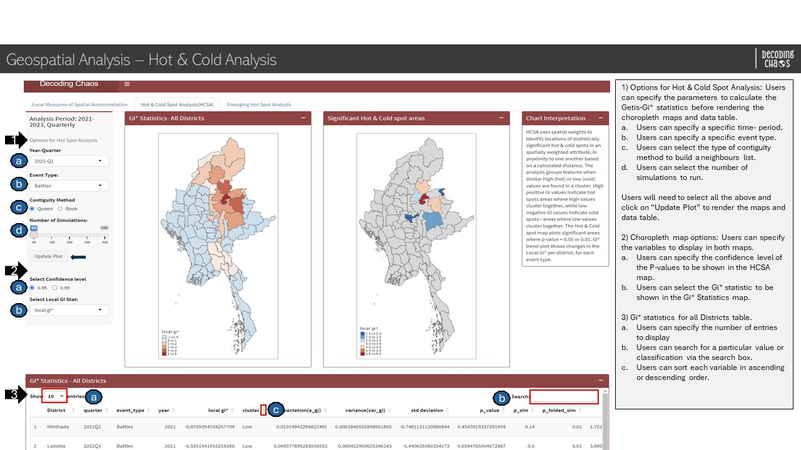
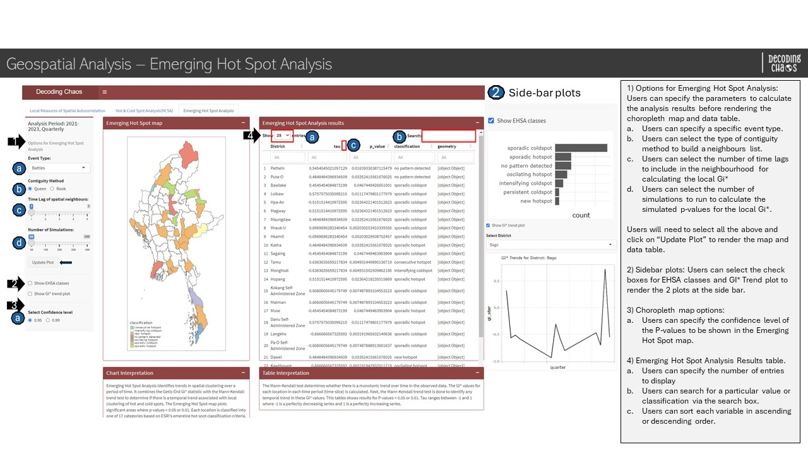
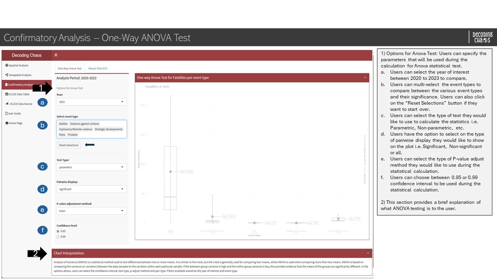
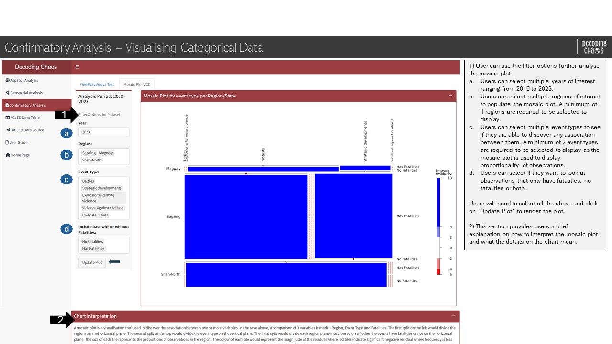

Storyboard aims to visually maps out user’s experience. It is a tool for making strong visual connection between the insights uncovered based on research and user’s interaction with the R Shiny dashboard application. The interactive components and UI design aims to facilitate data (and geospatial) exploration and analysis for users to develop effective counter measures and strategies.
The prototype can be broadly classify into three key areas:
Aspatial Analysis
Geospatial Analysis
Confirmatory Analysis
And the team has conceptualised the proposed layouts and UI features as follows:
For enhanced user experience, the prototype included ‘filter’ components (i.e. parameter selections) and ‘chart interpretation’ boxes, and have aligned them mainly to the left side of the web pages. The ‘chart interpretation’ box provides brief explanation of how each chart can be interpreted.
Section One - Aspatial Analysis
Aspatial Analysis - Overview
This tab serves as the “landing page” that displays the map of Myanmar and its spatial points of armed conflicts over the years (i.e. 2010 to 2023). Figure below shows the UI interactive features in the Overview sub-tab.

Aspatial Analysis - Overview - Part 1

Aspatial Analysis - Overview - Part 2
Code chunk below shows the simplified version of UI and Server components in R Shiny application for Overview sub-tab.
Show code
# UI ComponentsAspatialOverviewrow1 <-fluidRow(highchartOutput(), # display line chartsliderInput(), # select year rangeselectizeInput(), # select event (allows multiple selection)radioButtons(), # select administrative region levelselectizeInput(), # select administrative region (allows multiple selection)actionButton(), # action buttoncheckboxInput(), # conditional panel (option to display line chart)highchartOutput(), # display line chartcheckboxInput(), # conditional panel (option to display map information)leafletOutput(), # display point spatial map)AspatialOverviewrow2 <-fluidRow( DT::dataTableOutput() # display datatable)# Server Componentsoutput1-1-1<-renderLeaflet({}) # point spatial mapoutput1-1-2<-renderLeHighchart({}) # line chartoutput1-1-3<- DT::renderDataTable({}) # datatable
Aspatial Analysis - Distribution Analysis
This analysis page allows users to perform data visualisation to show the armed conflict incidents’ (and fatalities) spatial and density distribution represented in choropleth map and density ridge plot respectively. Figure below shows the UI interactive features in the Distribution Analysis sub-tab.

Aspatial Analysis - Distribution Analysis sub-tab
Code chunk below shows the simplified version of UI and Server components in R Shiny application for Distribution Analysis sub-tab.
Show code
# UI ComponentsAspatialDistributionrow1 <-fluidRow(sliderInput(), # select year rangeradioButtons(), # select administrative region levelradioButtons(), # select display ratesselectInput(), # select colour palettecheckboxInput(), # Customise Spatial MapselectInput(), # Spatial Map Classification TypesliderInput(), # Number of ClassescheckboxInput(), # Customise Density Ridge PlotselectInput(), # Density Ridge StyletmapOutput(), # choropleth mapplotOutput() # density ridge plot)AspatialDistributionrow2 <-fluidRow(textOutput())# Server Componentsoutput1-2-1<-renderTmap() # display choropleth mapoutput1-2-2<-renderPlot() # display density ridge plot
Section Two - Geospatial Analysis
Geospatial Analysis - Local Measures of Spatial Autocorrelation
This analysis page allows users to perform a cluster and outlier analysis, to identify significant clusters of high and low values and outliers. Using the Local Moran’s I statistic, features are categorised into 2 clusters (High-High, Low-Low), 2 outliers (High-Low, Low-High) and 1 insignificant classes.

Geospatial Analysis - Local Measures of Spatial Autocorrelation sub-tab
Code chunk below shows the simplified version of UI and Server components in R Shiny application for Local Measures of Spatial Autocorrelation sub-tab.
This analysis page allows users to perform a Hot & Cold Spot analysis, to identify significant areas of high and low values based on a calculated distance. Using the Getis-Ord Gi* statistic, features are grouped together when simila High (Hot) or Low (Cold) values are found in a cluster.

Geospatial Analysis - Hot & Cold Analysis sub-tab
Code chunk below shows the simplified version of UI and Server components in R Shiny application for Hot & Cold Analysis sub-tab.
Show code
# UI ComponentsHotCold1 <-fluidRow(selectInput(), # select periodselectInput(), # select Moran Event TyperadioButtons(), # select Contiguity method sliderInput(), # Number of SimulationsactionButton(), # action button radioButtons(), # select confidence interval selectInput(), # select local Gi statsplotOutput(), # GI StatsplotOutput(), # Sig hot/coldtextOutput(), DT::dataTableOutput())# Server Componentsoutput2-2-1<-renderPlot()output2-2-2<-renderPlot()output2-2-3<-renderDataTable()
Geospatial Analysis - Emerging Hot Spot Analysis
This analysis page allows users to perform an Emerging Hot Spot analysis, to reveal and describe how hot spots and cold spots have changed over time. After identifying temporal trends, features are classified into one of 17 ESRI hot spot classifications.

Geospatial Analysis - Hot & Cold Analysis sub-tab
Code chunk below shows the simplified version of UI and Server components in R Shiny application for Emerging Hot Spot Analysis sub-tab.
Show code
# UI ComponentsEHSA2 <-fluidRow(selectInput(), # select event typeradioButtons(), # select Contiguity Method"sliderInput(), # select Time Lag of spatial neighbourssliderInput(), # Number of SimulationsactionButton(),checkboxInput(), # checkbox to show EHSA classesplotlyOutput(), # display EHSA ba chart checkboxInput(), # checkbox to show GI* trend plot"selectizeInput(), # select districtplotlyOutput(), # display GiplotradioButtons(), # select Confidence levelplotOutput(), # EHSAmaptextOutput(), # EHSAText DT::dataTableOutput(), # data tabletextOutput()) # Server Componentsoutput2-3-1<-renderPlot()output2-3-2<-renderPlot()output2-3-3<-renderDataTable()
Section Three - Confirmatory Analysis
Confirmatory Analysis - One-Way ANOVA Test
This analysis page allows users to perform a One-Way ANOVA test to identify if there is any significant difference between the mean or median value for event types and the number of fatalities. If the p-value is below the critical value, it means that the null hypothesis has sufficient statistical evidence to support. Whereas if the p-value is above the critical value, the null hypothesis will be rejected due to insufficient statistical evidence.

Confirmatory Analysis - One-way ANOVA Test sub-tab
Code chunk below shows the simplified version of UI and Server components in R Shiny application for One-way ANOVA Test sub-tab.
Confirmatory Analysis - Visualising Categorical Data
This analysis page allows users to visualise categorical data using mosaic plot to find association between the variables. The size of each tile would represent the proportion of observations for the variable. The colour of each tile would represent the residual where red tiles indicate significant negative residual where frequency is less than expected and blue tiles indicate significant positive residual where frequency is more than expected. The intensity of the colour represents the magnitude of the residuals which is shown on the legend on the right.

Confirmatory Analysis - Visualising Categorical Data sub-tab
Code chunk below shows the simplified version of UI and Server components in R Shiny application for Visualising Categorical Data sub-tab.
Show code
# UI ComponentsConfirm3 <-fluidRow(selectInput(), # select YearselectizeInput(), # RegionselectizeInput(), # Event TypeselectInput(), # Include Data with or without FatalitiesactionButton(), plotOutput() # plot Mosaic plot)Confirm4 <-fluidRow(textOutput())# Server Componentsoutput3-2-1<-renderPlot()
2. R Shiny Application (simplified code)
The storyboard (in Section 1) facilitates the development of a prototype in R Shiny Application. Iterative prototyping will allow continuous improvement of the final project.
The proposed layouts and UI features
Code chunk below shows the simplified version of R Shiny Application for Decoding Chaos prototype.
#========================================================== ## load R packages#========================================================== pacman::p_load(shiny, shinydashboard, shinycssloaders, tidyverse, dplyr, leaflet, leaflet.extras, plotly, ggthemes, fresh, sf, sfdep, tmap, tm, ggraph, DT, spatstat, lubridate,viridis, ggplot2, readr, purrr, ggstatsplot, vcd, ggmosaic, forcats, ggridges, ggdist, highcharter)#========================================================== ## UI Components#========================================================== # main header ---header <-dashboardHeader(title ="Decoding Chaos")# main sidebar ---sidebar <-dashboardSidebar()sidebarMenu(menuItem("Aspatial", tabName ="Aspatial"),menuItem("Geospatial", tabName ="Geospatial"),menuItem("Confirmatory", tabName ="Confirmatory"),menuItem("Visit ACLED data"))# main body ---body <-dashboardBody(tabItems(tabItem(tabName ="Aspatial", AspatialSubTabs ),tabItem(tabName ="Cluster", ClusterSubTabs ),tabItem(tabName ="ConfirmatoryAnalysis", ConfirmSubTabs)))# fluidRows ---# aspatial analysis tabAspatialOverviewrow1 <-fluidRow(highchartOutput(), # display line chartsliderInput(), # select year rangeselectizeInput(), # select event (allows multiple selection)radioButtons(), # select administrative region levelselectizeInput(), # select administrative region (allows multiple selection)actionButton(), # action buttoncheckboxInput(), # conditional panel (option to display line chart)highchartOutput(), # display line chartcheckboxInput(), # conditional panel (option to display map information)leafletOutput(), # display point spatial map)AspatialOverviewrow2 <-fluidRow( DT::dataTableOutput() # display datatable)AspatialDistributionrow1 <-fluidRow(sliderInput(), # select year rangeradioButtons(), # select administrative region levelradioButtons(), # select display ratesselectInput(), # select colour palettecheckboxInput(), # Customise Spatial MapselectInput(), # Spatial Map Classification TypesliderInput(), # Number of ClassescheckboxInput(), # Customise Density Ridge PlotselectInput(), # Density Ridge StyletmapOutput(), # choropleth mapplotOutput() # density ridge plot)AspatialDistributionrow2 <-fluidRow(textOutput())# geospatial analysis tabCluster2 <-fluidRow(selectInput(), # select periodselectInput(), # select Moran Event TyperadioButtons(), # select Contiguity method selectInput(), # select Spatial Weights StylesliderInput(), # Number of SimulationsactionButton(), # action button radioButtons(), # select confidence interval selectInput(), # select Lisa ClassificationselectInput(), # select Local Moran's StatplotOutput(), # LocalMoranMapplotOutput(), # LisaMap textOutput(), DT::dataTableOutput())HotCold1 <-fluidRow(selectInput(), # select periodselectInput(), # select Moran Event TyperadioButtons(), # select Contiguity method sliderInput(), # Number of SimulationsactionButton(), # action button radioButtons(), # select confidence interval selectInput(), # select local Gi statsplotOutput(), # GI StatsplotOutput(), # Sig hot/coldtextOutput(), DT::dataTableOutput())EHSA2 <-fluidRow(selectInput(), # select event typeradioButtons(), # select Contiguity Method"sliderInput(), # select Time Lag of spatial neighbourssliderInput(), # Number of SimulationsactionButton(),checkboxInput(), # checkbox to show EHSA classesplotlyOutput(), # display EHSA ba chart checkboxInput(), # checkbox to show GI* trend plot"selectizeInput(), # select districtplotlyOutput(), # display GiplotradioButtons(), # select Confidence levelplotOutput(), # EHSAmaptextOutput(), # EHSAText DT::dataTableOutput(), # data tabletextOutput()) # confirmatory analysis tabConfirm1 <-fluidRow(selectInput(), # select timeselectizeInput(), # select event typeactionButton(), # reset buttonselectInput(), # select test typeselectInput(), # Pairwise DisplayselectInput(), # P-value adjustment method radioButtons(), # select Confidence levelplotOutput(), # display Anovaplot)Confirm2 <-fluidRow(textOutput())Confirm3 <-fluidRow(selectInput(), # select YearselectizeInput(), # RegionselectizeInput(), # Event TypeselectInput(), # Include Data with or without FatalitiesactionButton(), plotOutput() # plot Mosaic plot)Confirm4 <-fluidRow(textOutput())# subtabsAspatialSubTabs <-tabsetPanel(tabPanel("Overview", AspatialOverviewrow1, AspatialOverviewrow2 ),tabPanel("Distribution Analysis", AspatialDistributionrow1, AspatialDistributionrow2 ))ClusterSubTabs <-tabsetPanel(tabPanel("Local Measures of Spatial Autocorrelation", Cluster2),tabPanel("Hot & Cold Spot Analysis(HCSA)", HotCold1),tabPanel("Emerging Hot Spot Analysis", EHSA2))ConfirmSubTabs <-tabsetPanel(tabPanel("One-Way Anova Test", Confirm1, Confirm2),#tabPanel("Mosaic Plot",# Confirm2),tabPanel("Mosaic Plot-VCD", Confirm3, Confirm4)#Confirm2))#========================================================== ## UI dashboard#========================================================== ui <-dashboardPage(title ='Armed Conflicts in Myanmar (2010 to 2023)', header, sidebar, body) #========================================================== ## Server Components#========================================================== server <-function(input, output) {# aspatial analysis taboutput1-1-1<-renderLeaflet({}) output1-1-2<-renderLeHighchart({}) output1-1-3<- DT::renderDataTable({}) output1-2-1<-renderTmap()output1-2-2<-renderPlot()# geospatial analysis taboutput2-1-1<-renderPlot()output2-1-2<-renderPlot()output2-1-3<-renderDataTable()output2-2-1<-renderPlot()output2-2-2<-renderPlot()output2-2-3<-renderDataTable()output2-3-1<-renderPlot()output2-3-2<-renderPlot()output2-3-3<-renderDataTable()# confirmatory analysis taboutput3-1-1<-renderPlot()output3-2-1<-renderPlot()}#========================================================== ## Run Shiny Application#========================================================== shinyApp(ui = ui, server = server)